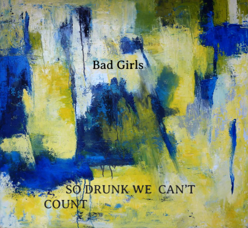

Challenge: Design A Band
Challenge Information
Our challenge was to create a band cover but the twist is that the name of the band and album name was totally random. Ideas used to creae it were:
- --Go to random articles to find our name and album name
- --Design Thinking-Ask people what they prefer and and use it in the cover
- --Put the random information to make the biography of our band
This was my end result after going through all the steps.
Album Cover
Band's Bio
The Bad Girls band consists of 3 life long firends who of grew up in a rough neighborhood. Their names are Jaz, Hannah, and Ann. Because they lived in a rough neighborhood they always took care of one another. As they got older Ann changed. She got into so much trouble and would pass out because of all the alcohol she drank. Her friends always wondered what was going on in her mind and to her it was a blur. All she remembers is colors flashing by as her life continued. She got her life back on track by singing with Jaz and Hannah. The cover name is SO DRUNK WE CAN'T COUNT to reminder her of her past and the blue, white, and yellow colors for the background are all she remembers during her tough times.